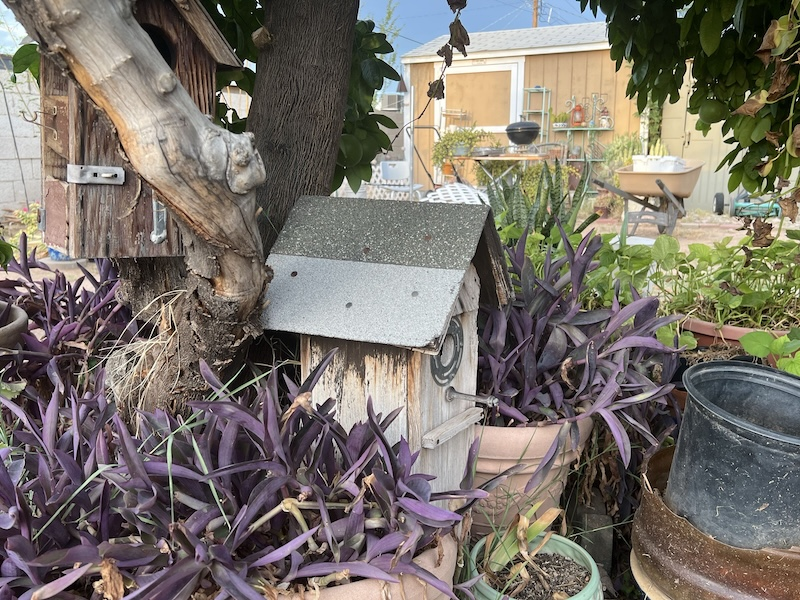

Accessible
We share tools, knowledge, harvests, and the work of caring for this place.
A little about us
Rooted Together started with a family, a patch of neglected land, and the idea that a shared garden could make this community feel more like home.

Our story
In 2025, a patch of unused land on Jupiter Street became a place to gather. What started as a weekend cleanup now includes 36 garden plots, a pollinator border, a shared tool shed, and a few volunteers.
We care for the garden together and share what it gives us. Whether you are growing tomatoes for the first time or swapping garden knowledge and tips after years of practice, there is room for everyone here.
What guides us
We share tools, knowledge, harvests, and the work of caring for this place.
We grow in ways that respect our desert climate and the people who call it home.
Questions are encouraged. There is no perfect garden.